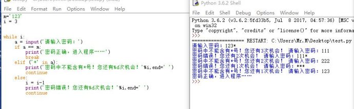

M
华为是全世界最好的手机
1.range这个函数很实用.
2.python有三元操作，不过要小心使用。
正题。循环一直是程序中很屌的功能for和while。 python中的for可没有c中的省心。
基本形式： for <迭代数> in <对象集合>：
而while就直接在后面加条件就好了，同时可以搭配and or等。 看看例子
1.判断闰年
2.输出1-5
3.输出*
在循环中很重要的功能就是：
break 在需要时终止for循环 continue 跳过位于其后的语句，开始下一轮循环。
下面密码这个就是如此
